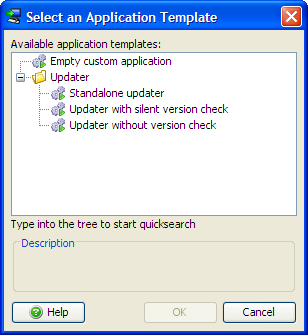

Auto-Update Functionality


Auto-Update Functionality |
|
install4j creates a special file updates.xml in the media output directory when you build the project. This file describes the media files of the current version. If you want to use install4j's auto-update functionality, you have to upload this file to a web server. This file is downloaded by deployed installations as described below and delivers information about the current version.
Downloading and installing the new version is done with a custom installer application. install4j offers several templates for updaters that correspond to the update strategies outlined below in this help topic.

The updates.xml file is created in the media output directory each time you build the project. You can use this file as is, however, some situations require that you modify the file before uploading it to the web server. The file looks like the sample below:
<?xml version="1.0" encoding="UTF-8"?>
<updateDescriptor baseUrl="">
<entry targetMediaFileId="8" updatableVersionMin="" updatableVersionMax="" fileName="hello_windows_4_0.exe"
newVersion="4.0" newMediaFileId="8" fileSize="2014720" bundledJre="">
<comment />
</entry>
<entry targetMediaFileId="9" updatableVersionMin="" updatableVersionMax="" fileName="hello_linux_4_0.rpm"
newVersion="4.0" newMediaFileId="9" fileSize="817758" bundledJre="">
<comment />
</entry>
<entry targetMediaFileId="10" updatableVersionMin="" updatableVersionMax="" fileName="hello_macos_4_0.dmg"
newVersion="4.0" newMediaFileId="10" fileSize="1359872" bundledJre="">
<comment />
</entry>
</updateDescriptor>
The root of the updates.xml file is the updateDescriptor element. It contains the baseUrl attribute that can be used to specify an alternate download URL for the installers. By default, it is empty which means that the installers must be located in the same directory as the updates.xml file. The updateDescriptor element contains one or more entry elements which correspond to the media files that were created by the build.
When install4j determines whether an entry in the update descriptor is a match for the current installation, it looks at three attributes of the entry element: Most importantly, the targetMediaFileId attribute has to match the media file ID of the current installation. You can show media file IDs by invoking Media->Show IDs in the media section of the install4j IDE. If you discontinue a media file, you can migrate users of that media file to a different media file by duplicating the desired entry in updates.xml and changing the targetMediaFileId attribute to that of the discontinued media file. Another criterion is the installed version of the application. Depending on that version, you might want to offer different updates. The updatableVersionMin and the updatableVersionMax attributes can set lower and upper limits for the installed versions that should download the associated entry in the update descriptor. By default, these attributes are empty, so no version restrictions apply.
Attributes that describe the update installer include fileName which is necessary to construct the download URL, and fileSize which contains the size of the file in bytes. newVersion contains the available version while newMediaFileId is the media file ID of the update installer which is the same as targetMediaFileId unless you changed it yourself. Lastly, bundledJre contains the original file name of the JRE bundle without the .tar.gz extension or the empty string if no JRE is bundled in the installer. In addition to the above attributes, the nested comment element can contain a description that should be displayed to the user. All of this information can be used for custom logic to select a suitable update installer or be displayed to the user in the updater. In addition, you can add any number arbitrary attributes to the entry element yourself.
The install4j runtime API contains the com.install4j.api.update.UpdateChecker utility class that can download the updates.xml file and translate it to an instance of com.install4j.api.update.UpdateDescriptor. From there, you can get a suitable com.install4j.api.update.UpdateDescriptorEntry with a single method call. Please see the Javadoc for more detailed information. The above API is primarily intended for use in your application. The install4j runtime API contained in resource/i4jruntime.jar is always on the class path for a generated launcher.
In a custom installer application, you would rather use a "Check for update" action that performs the same actions as UpdateChecker and saves the downloaded UpdateDescriptor to an installer variable. All updater templates included with install4j execute the "Check for update" action at some point.
Instances of UpdateDescriptorEntry expose all attributes of the corresponding entry element in the updates.xml file. They also give access to additional attributes added to the entry element so you can implement custom logic to find a suitable update. The most important method of the UpdateDescriptorEntry class is the getUrl() method that constructs the full URL from which the update installer can be downloaded. If no baseUrl has been specified on the updateDescriptor root element, the URL starts with the the parent directory from which the updates.xml file has been downloaded.
The easiest way to provide auto-update functionality to your users is to create a self-contained updater application. This is done by adding an application on the screens & actions tab and choosing the "Standalone updater" application template. Such an auto-updater can by invoked manually by the user, on Windows, it can also be added to the start menu. No changes in in your application code are required so far.
If you have a GUI application, you could provide integration with the updater by offering a "Check for update"
menu item or similar that invokes the updater. One problem in this scenario is that if the updater downloads
and executes the update installer, your application will still be running and the user will receive a corresponding
warning message in the installer. The solution to this problem is to use the com.install4j.api.launcher.ApplicationLauncher
class to launch the updater. With this utility class you can launch the update installer by passing its ID as an argument.
IDs can be shown on the screens & action tab by toggling the "Show IDs" tool bar button. If you launch
an installer application such as an updater that way, the "Shut down calling launcher" action will be able
to close your application. To react to the shutdown, for example, to invoke your own shutdown routine,
you can pass a callback to the ApplicationLauncher.launchApplication(...) call. After you were
notified through the call back, your application will be terminated with a call to System.exit().
In this scenario, you invoke the updater like in strategy 1, but rather than offering a "Check for update" menu item, you do so on a regular schedule. For example, you automatically check for updates every week or each time the user starts the application. In that case, the standalone updater template is not suitable since you only want to give the user feedback if there is actually a new version available. However, the standalone updater always starts with a "Welcome" screen, verbosely checks for updates and informs the user that no new version is available. Most likely, your users will be bothered if this is done automatically.
The "Updater with silent version check" application template is intended for this use case. It checks for an update in the startup sequence and terminates the updater if no new version is available. This means that if there is no new version available, your users will not see that a check has taken place. Only if a new version is available will the updater display its window and inform the user of the possibility to download the update installer.
For such an automatic check you will likely want to invoke the updater in a blocking fashion. If you
call ApplicationLauncher.launchApplication(...) with the blocking argument set to
true, the method will not return until the update installer has exited. If the user
decides to run the installer on the "Finish" screen, your application will terminate as explained in strategy 1.
If you want to take the integration one step further and display the availability of a new version in your application yourself, you can use the com.install4j.api.update.UpdateChecker class as explained under the "updates.xml" heading. In this way, you can create your own panel that announces the new version and lets the user decide whether to download it or not. If the user decides to download, the "Updater with silent version check" template is not suitable since it informs the user about the new version once more.
The "Updater without version check" application template is intended for this use case. It immediately starts downloading the
new version and then proceeds to the "Finish" screen where the user can decide to start the downloaded installer.
In the other two templates the user can choose the directory where the downloaded installer should be saved.
That screen is omitted in this template and the installer is downloaded to the user home directory by default.
You can change this default directory be passing the argument -DupdaterDownloadLocation=[directory]
to the ApplicationLauncher.launchApplication(...) call. Again, the updater will terminate your
application if the user starts the installer as explained for strategy 1.
For strategy 2 and 3 above, you check for an update on a regular schedule. install4j comes with a standard implementation of an update schedule registry that frees you of the task to implement one yourself. The com.install4j.api.update.UpdateScheduleRegistry class is intended to be used in your application. You configure an com.install4j.api.update.UpdateSchedule with a call to UpdateScheduleRegistry.setUpdateSchedule(...) and call UpdateScheduleRegistry.checkAndReset() each time your application is started. If you get a positive response, you can start a suitable updater as explained above. Please see the Javadoc for more information.
To facilitate the configuration of the update schedule in your installer, install4j offers a special "Update schedule selector" form component whose initial value is set to the current setting (if any) and automatically updates the setting for the installed application when the user clicks "Next".
|
|